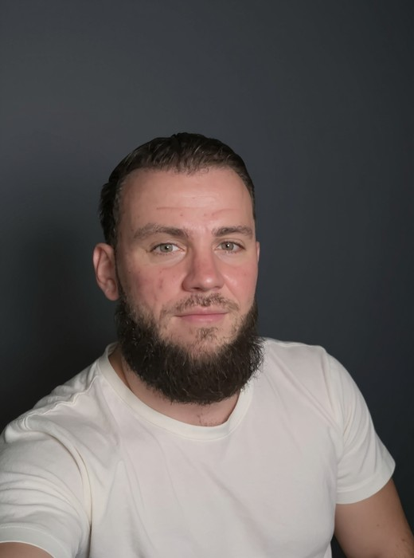

Ich baue KI-gestützte Automationen und Webanwendungen mit Python und TypeScript — in eigenen Projekten und im Team, vom Datenmodell bis zum Deployment. Am meisten interessieren mich die Fehlerfälle: doppelte Aktionen, hängende Jobs, stille Datenverluste, halbe Rollouts — und Tests, die genau diese Fälle festhalten. KI-Agenten sind mein Entwicklungswerkzeug; Anforderungen, Architekturentscheidungen und Abnahme liegen bei mir, und jeden Beitrag erkläre ich am Code. Vier Jahre B2B-Vertrieb haben mir beigebracht, zuerst das Problem zu verstehen. Ich suche eine Junior-Rolle in einem Entwicklungsteam.